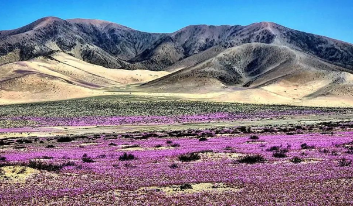
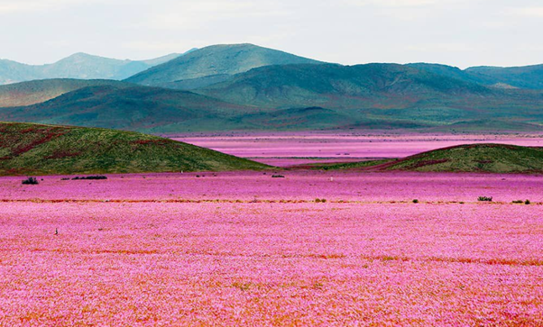

O Desierto Florido é um fenômeno natural raro que ocorre no Deserto do Atacama. Acontece quando chuvas excepcionais fazem com que sementes de plantas adormecidas no solo há anos germinem e floresçam, criando um tapete de cores vivas no deserto árido. Isso acontece normalmente durante as chuvas de primavera. Lá nascem lírios, margaridas, alove vera e outras plantas do deserto.

